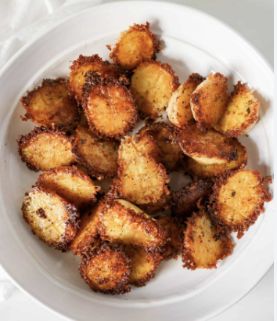

Extra Crispy Parmesan-Crusted Potatoes
Ingredients:
- Baby Potatoes
- Neutral Oil
- Garlic Powder
- Onion Powder
- Parprika
- Chilli Flakes
- Pepper
- Salt
- Parrmesan
Instructions
- Cut the baby potatoes in half
- Add them into a medium sized (preferably metal) bowl
- Add a generous amount of oil into the bowl with the potatoes. Toss them and make sure they are all coated evenly
- Add in all the seasoning. Add enough so that each potatoes has seasoning
- Cover the bowl with clibg wrap, and let it marinate in the fridge for a minimum of 30 minutes
- As potatoes are marinating, preheat oven to 400 F
- Cover a tray that will fit in your oven and fit all the potatoes with a thin layer of parmesan
- Once potatoes are marinated, place them flat side down onto the paremsan
- Once oven is preheated, place tray in oven and bake for 30 minutes. Make sure to watch them as they cook
- Once they have fully cooked and gotten crispy, take them out and let them cool for 5 minutes before serving
- Enjoy!

Back